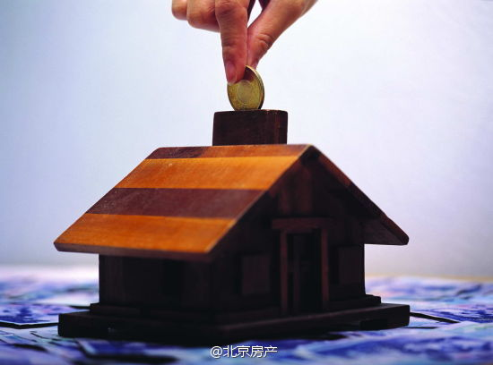

中国广大民众是希望房价涨的多，还是跌的多？ //@Apache9:真7折了买买买啊 //@_散沙_民工智能_:没用的，有余力二套的刚性不强，现在更不会买。@北京房产:#乐居早报#【传首套房认定标准松动：房贷还清可享受首套房优惠政策】昨日有传闻称“四大行将发布政策，只要房贷余额还清都算首套房”。上海证券报从被传闻的一家银行了解到，此消息基本属实。据透露，从具体政策上看，首套房利率或重返7折，房贷还清可视为首套房。楼市限贷松绑：房贷还清可享受首套房优惠政策 这会是真的嘛？ 
 楼市限贷松绑：房贷还清可享受首套房优惠政策 这会是真的嘛？
楼市限贷松绑：房贷还清可享受首套房优惠政策 这会是真的嘛？